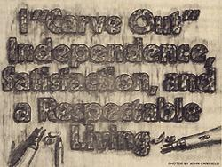
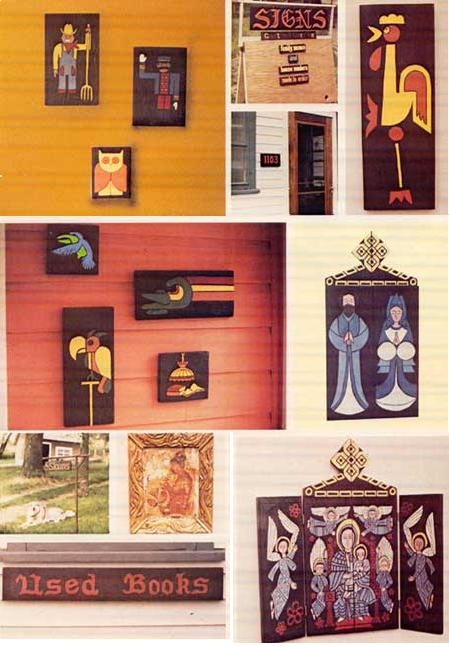
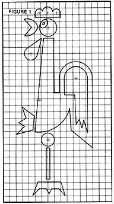
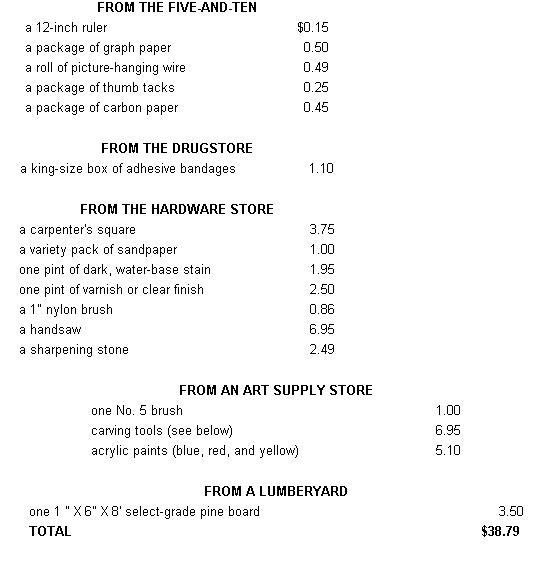
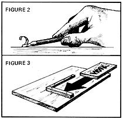
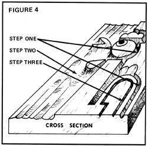

If you like working with wood and have a shop equipped with router, belt sander, circular saw, planer, and assorted hand tools . . . you can net $10,000 a year with your own wooden sign business (see Robert Wade's "Dimensional Wood Signs: How to Make 'Em and Sell 'Em.", MOTHER NOS. 36, 37, and 38). And if you don't have all that expensive equipment, bud you still want to turn a buck making wooden signs? "There's hope," says Jim Watson of Menomonie, Wisconsin. "Because for an initial investment of $40, anyone who can whittle a stick should be able to duplicate my success in making and selling hand-carved signs . . . without any power tools-or even shop space-whatsoever!"
I'll bet most home businesses start as hobbies, and only grow into moneymaking operations by accident. That-at any rate-is the story of my small (but profitable) sign carving enterprise.
I started fabricating wooden signs because I enjoyed working with wood, and because I liked being able to give gifts that were more personalized than the tacky-looking plaques sold in discount stores. For a long time, in fact, I had no idea that a hungry market even existed for my carvings.
Eventually, though, people who'd seen and admired the small signs I'd given away as gifts began asking me if I would make similar items for them (in return for food, services, and-more often than not-cold cash). At first I was reluctant to charge for my handiwork . . . but would-be customers soon made it clear that they were more than willing to pay for the things I created. Thus, almost against my will, I began to accept orders for plaques, signs, and other small wood carvings. And before long, my one-time hobby had transformed itself into a small but full-fledged, profitmaking business!
You don't need a shop, power tools, or special experience to start and sustain a sign carving operation like the one that's paid my bills for the past several years. All you really need is just $40 worth of supplies . . . and a modicum of grit, determination, and talent.
Here, more specifically, is a complete shopping list of this enterprise's "necessary equipment":
When shopping for lumber, try to choose planks with the straightest possible grain (top and sides) that are also as dry and knot-free as possible. Naturally, you'll have to pay more for select-grade stock . . . but the first time you try to carve through a knotty board you'll agree that a better piece of wood is worth both the added expense and whatever effort you have to exert to find it. (You may be able to avoid that "added expense" altogether, though, if you follow the suggestions in "Think Scrounge", MOTHER NO. 37, pages 114-116.)
After several years of making signs, I'm still using only three different tools-gouges-from the least expensive of the imported carving sets ($1.29 for 12 tools back when I bought mine). So there's obviously no need to spend a great deal of money on such equipment. Probably the most painless way to outfit yourself with gouges would be to buy a $6.95 X-ACTO carving set at the local art, hardware, or department store.
I don't get along well with power tools-and thus don't use them in my work-but there's no question that a Skilsaw or table saw, a router, and a sander would take much of the time and effort out of making signs. (You could still use hand tools to finish off a design, thus giving it that valuable hand-carved look.) If you have and plan to use such powered equipment, you might want to think more along the lines of a larger-scale business, something like the one described recently in this magazine by Robert Wade.
And a comment about paints: I recommend cadmium-based pigments, since they're bright and can be mixed together to yield a wide variety of hues.
Once you've collected your supplies, all you need-besides a fairly solid table upon which to do the actual carving-is a work area . . . not shop, but area, located wherever you feel the most comfortable. I used to do all my carving in the living room, but I later moved to a spare bedroom so I wouldn't have to clean up after myself every day. (People who work with wood do tend to produce mountains of chips, splinters, and sawdust.)
During the summer, of course, you can move your whole operation onto the front porch: That's one of the "fringe benefits" of being a sign carver: You can make the chips fly either indoors or out, depending on the weather!
Before you begin to carve, naturally, you'll need a design or pattern to guide you. I'm not much of a designer, so I end up "borrowing" a good many of my ideas from newspapers, magazines, and other printed media. You can do the same. Just keep your eyes open for simple, distinctive patterns . . . and before long, you'll have enough of them for a good century of sign carving.
Right now, though-unless you have something better in mind-you can simply start with the design for a rooster (Fig. 1) given to me by a friend.
Transfer the sketch to your pine board by placing a piece of carbon paper between the drawing and the wood (don't cut the plank just yet), centering the image, and tracing it onto the wood's surface. (If you're using a design that isn't the size you want it to be, you can scale the pattern up or down with the ruler and graph paper and then trace it onto the board.) Finally, draw a line across the piece of lumber (use the carpenter's square to make it nice and true) and saw along the mark to cut your "rooster-sized" chunk of raw stock from the rest of the plank.
Now you're ready to begin carving . . . almost. First, however, let me list a few simple rules designed to make the work go smoothly and safely:
One: Hold the carving tool as shown in Fig. 2.
Two: Use a jig (Fig. 3) or C-clamps to firmly and positively help you hold the board you're working on.
Three: Always push the cutting tool away from the hand with which you're steadying the board.
Four: Turn the wood as frequently as necessary so that you're always carving in the most comfortable and relaxed manner possible.
Five: Don't be discouraged if the tool doesn't always go exactly where you aim it . . . "the touch" will come with practice. Getting to know wood on an intimate level-its grain, its texture, its idiosyncrasies-takes time. (It's also one of the major satisfactions of carving small signs by hand.)
OK. Start by carving away the wood around and adjacent to the traced rooster (as shown in Fig. 4, Step 1) using either a V-shaped gouge, a small U-shaped gouge, or a straightbladed knife (make slanted cuts).
Next-with the aid of a large, U-shaped gouge-clean away the entire background surrounding the design, making long strokes with the grain (Fig. 4, Step 2). If your tool consistently digs too deeply into the wood, reverse the board and start from the other end. (Note: You may find your shoulders tensing up during this phase. If so, make a conscious effort to relax. In the future, as you become more familiar with the wood and the tools, you won't "stiffen up" quite so easily.)
Once you've cleaned away the background, go back to the V-shaped gouge and carve shallow grooves along any interior lines-in the case of the rooster, this would be the eye and the tail feathers-of the design (Fig. 4, Step 3).
At this point, you may like the sign "as is" and not wish to do anything more to it. I prefer to give my plaques added depth, however, by repeating the first two carving steps (that is, Steps 1 and 2 of Fig. 4).
Before staining, painting, or varnishing the plaque, smooth out its rough spots with your tools and lightly sand the design itself until all its corners and edges are professionally "slicked up". (I like to leave deep grooves in the background of my relief plaques, but you may prefer a flat-or textured-surface.) Then wipe away all wood dust and break out the brushes . . . you're ready to stain your masterpiece.
I finish my work with a water-based stain-my favorites are Deft Walnut and Spanish Walnut-which is fairly dark (so the paint will contrast nicely with the dusky wood).
Coat the entire sign-front, back, and sides-with the finish. (Believe me, you'll drive yourself zonkers trying to stain just the grooves in the background without touching the design itself!) Then allow the carving to dry thoroughly.
Next, get out your acrylics and that No. 5 brush and prepare to paint the rooster. (Remember, you can mix the red, yellow, and blue acrylics to obtain any color you wish. For instance, a blend of red and yellow will produce orange, blue and yellow make green, etc. To soften the colors and make them cover better, I suggest you add a little white to each hue.)
I think you'll be pleasantly surprised at how easy it is to paint the raised surface of the design itself. All you have to do is hold the brush almost parallel with the board and pull it over the grooves and edges: The coating of acrylic will skip all the low spots and stick to just the rooster! (Note: More than one coat may be necessary to completely cover the darkly stained wood.)
Allow the paint to dry completely and then varnish the sign. I use Deft Clear wood finish: It seals everything-wood, paint, and stain-and leaves a matte (rather than a gloss) finish. And do make sure your brush has no water in it, or you'll smear the paint job.
Once the varnish dries on your sign, you can prepare the piece of work for display. Simply [1] cut off a six-inch piece of picture-hanging wire, [2] twist the ends into loops, and [3] thumb-tack the loops to the back of the plaque near its top.
Sign your John Henry to the completed "work of art" and hang it on the wall, give it away, or sell it. You're an artisan!
The same techniques used in the construction of simple flat signs and plaques can be employed to create designs in anything made of wood: doors, cupboards, beams, etc. And-since you probably won't do anything more than stain and varnish such carvings-you'll be able to attempt much more intricate designs.
If you add a miter box to your equipment, you can even fabricate your own picture frames from 1" X 1-1/2 to 3" pine stock. It may take you longer to carve frames than signs (particularly when you're trying to achieve a complex interweaving of leaves and vines), but they're richly satisfying to construct and quite impressive when finished.
You may also want to carve woodcuts and/or linoleum blocks with which you can then make prints and greeting cards. (Linoleum is especially interesting to cut into sinceunlike wood-it has so much "give".) Of course, to do this you'd have to add a brayer-that is, an ink roller-and some printing ink to your growing stock of supplies . . . but the roller and ink can quickly pay- for themselves in satisfaction (if not Christmas and greeting card sales).
The more you expand your product line, then, the more you can add to your sense of accomplishment-and gross sales-as a carver-craftsman. So let your imagination roam! And diversify!
The secret to marketing hand-carved signs in quantity is exposure. Get your work into public view, and-if it's good-within a short period of time you should be able to garner (by word of mouth) all the business you can handle. (It goes without saying that you should include your name and address or phone number on each and every carving you sell or give away. Remember: Sold pieces are your best advertisements!)
And how can you gain that all-important first exposure? Start by making a sign for the front of your own house. (This is the kind of work you'll sell most often, so it won't hurt a thing to give a few away as gifts to friends.) If zoning laws permit, mention on the plaque that you're a wood-carver for hire . . . otherwise, just feature your name and address. Mount the carving in an attractive and conspicuous manner on the lawn or in a window.
Another way to gain visibility is to rent a booth at a local craft fair. Mount your samples on an old door or piece of plywood and stand the display up alongside your booth's table. Have some business cards made in advance (blockprinted cards are best, but hand-lettered ones will do). And to really draw in the potential customers, lay out a stock of pre-traced boards, grab your carving tools, and make those chips fly!
You shouldn't have to attend too many of these craft shows before the customers begin to bang down your door (the one with the samples attached to it)! At my first saleduring the Potato Blossom Festival in Fort Fairfield, Maine-I received some orders from as far away as Pennsylvania . . . and one lady from Bangor, Maine gave me a standing order for as many decorative plaques as I could produce! (At another craft fair, however, I forgot my carving tools and business was lousy.)
You might want to try selling your work through a consignment crafts outlet (that is, a store which will stock your wares and pay you if and when the pieces sell). Since I've never had to go this route, I can't recommend it one way or the other.
I generally charge a dollar per three-inch (or smaller) letter when making signs, and $2.50 to $15 each for plaques . . . when the customer pays in cash. (I like to remain flexible on payment: Bartering and haggling can be half the fun of a sale!)
I used to give customers a firm date on which they could expect to receive their finished carvings. I soon found, however, that "due dates" decreased my enjoyment of-and hence the quality of-my work. As a result, I now avoid deadlines altogether, since I've found that most people are willing to wait extraordinary amounts of time-if they have to-for handcrafted goods.
You're probably wondering-and rightly so-how much money a person can expect to make with my small carve-it-yourself sign business. All I can say is, you can make a little or a lot depending on how many hours you're willing to work, what kind of reputation you'll eventually build, etc. I can create $25 (or more) worth of signs in a four-hour workday . . . signs which-many times-are sold before they're finished. For you to do this, however, you must have an established reputation and experience . . . both of which take time to get. So don't expect to become rich-or even moderately affluent-at this craft overnight.
Remember, too, that sign-carving is a highly seasonal business. Most of your sales will occur between September and Christmas, while the rest of the year can be pretty lean if you're counting on a steady income.
Of course you probably won't be able to keep pace with the flurry of orders that come in just before Christmas, so you should use the slow off-months as a "breather" season in which you can leisurely build up a large stock of decorative plaques and other "standard" items. You can also make your own Christmas presents far in advance during the slack part of the year . . . or just spend the time carving for your own enjoyment.
Once you're "established" as a sign maker in your area, you may find that business is so good you actually have money left over at the end of each month. (It's possible!) If so, you might want to reinvest your earnings in optional equipment and supplies (power tools, for instance). Eventually, you may accumulate the experience and capital necessary to start a large, commercial sign operation such as-again-the one described by Robert Wade in MOTHER NOS. 36, 37, and 38.
I can't guarantee that you'll carve out profits by making and selling small signs the way I do . . . but the potential is certainly there. And if there's a more relaxing, soul-satisfying way to earn a living, I don't know of it!
If you have any questions about the small sign-carving business described in this article, author Jim Watson says he'll be happy to give you a personal answer. For courtesy's sake, though, be sure to enclose $2.00 with any query sent to Mr. Watson . . . to partially cover his expense in sending you a reply. The address: 1103 17th Ave., Menomonie, Wis. 59751.-MOTHER.
|
 |
 |
 |
|
 |
 |
 |